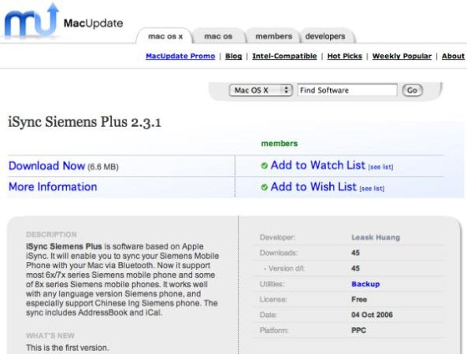

My Software on MacUpdate!
10/4/2006 10:17:32 PM

My little software: iSync Siemens Plus now could be download on MacUpdate.com!
So happy.
URL on MacUpdate.com:
http://www.macupdate.com/info.php/id/22975
My little software: iSync Siemens Plus now could be download on MacUpdate.com!
So happy.
URL on MacUpdate.com:
http://www.macupdate.com/info.php/id/22975
Comments
sparrow xiao - 11/18/2006 10:02:44 PM
本不想留言，不过看了别人的日志又得到了启发总得表示感谢。TKS,i have investigated sth about the iSync!
睿 苏 - 10/5/2006 11:43:57 AM